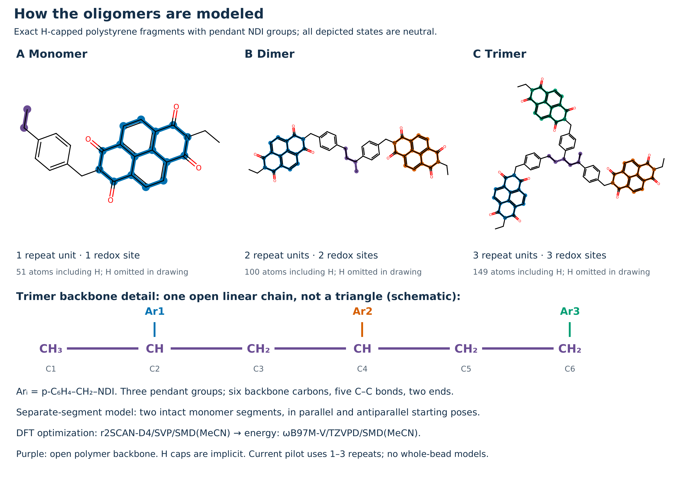
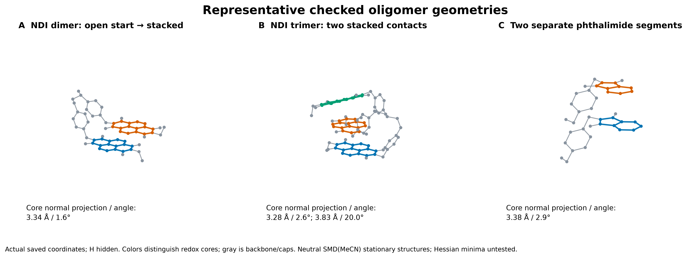
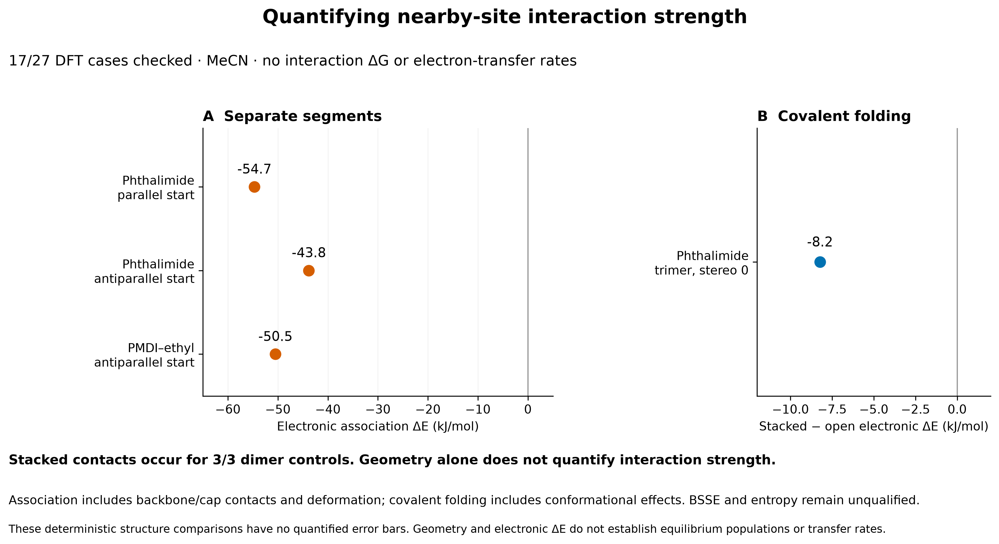
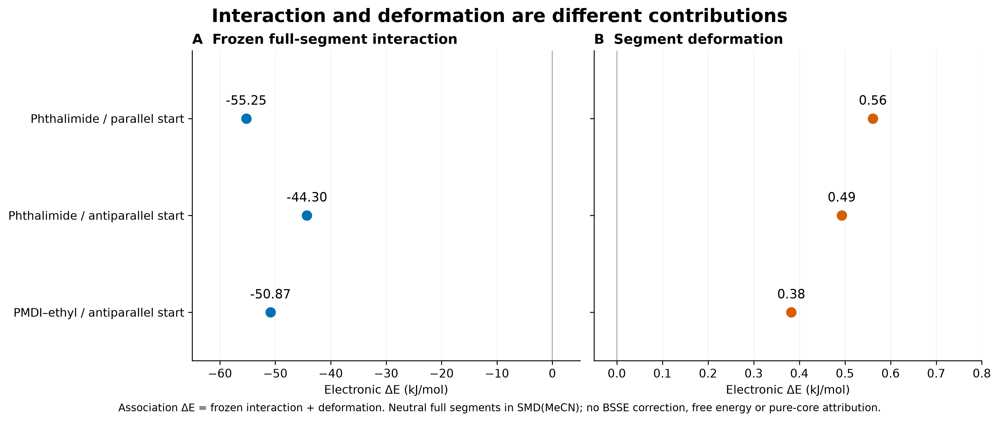

Rotate all 3D models · Pipeline and scope · Checked numerical comparisons
Design objective: weak intersite and segment interactions. Strong persistent stacking and undesired electron transfer are concerns. Electronic attraction alone does not establish a stacking population or electron-transfer rate.




Verified values and definitions · Vector PDF
Models are neutral H-capped polymer fragments. The separate-segment complexes contain two intact molecules; none depicts whole beads. No tetramers are included. Recovering calculations remain unqualified until the normal QC passes.